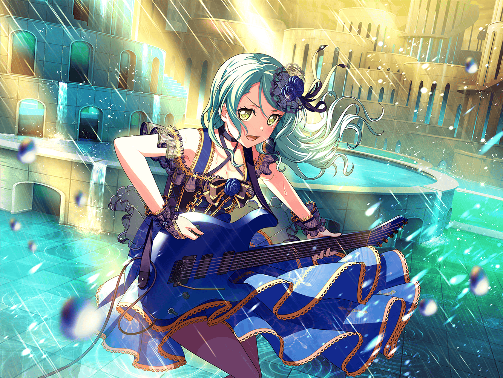

CiRCLE前 カフェ
紗夜
……こんにちは、{{userName}}さん
紗夜
機材の搬入ですか？
いつもCiRCLEのお仕事、お疲れさまです
紗夜
……私ですか？
私はちょっと散歩です
紗夜
……はい。
気づかないうちに、足がここに向かっていました
紗夜
……ふふ。
本当は、目的もなくフラフラと歩くことができれば
いいのですが……
紗夜
そういうことは……
私には、なかなか難しいみたいですね
紗夜
きっと日菜なら、もっと楽しそうに歩くのでしょうけど……
紗夜
……いえ、すみません。
こちらの話です
紗夜
……{{userName}}さんには、
自分だけのものってありますか？
紗夜
……あ、すみません、いきなりこんな質問をしてしまって
紗夜
ちょっと聞きたくなってしまったんです
紗夜
特に深い意味があるわけではありませんから、
そんなに気にしないでください
紗夜
……ええ。
実は私、まだ自分の音というものを見つけられていなくて
紗夜
自分の音……なんて抽象的でわかりませんよね？
紗夜
……ええ、もちろん、ギターをやめるつもりはありません。
あの子とも約束してますから……
紗夜
あの時は、本当にやめてしまおうと思いましたけど……
紗夜
ギターを弾くことが、苦痛でしかありませんでしたから……
紗夜
……はい。
練習中にも何度もミスをしてしまって
紗夜
メンバーにも本当に迷惑をかけてしまいました
紗夜
みっともない話なのですが、
その時は全くギターに集中できなかったんです
紗夜
あんな醜態は二度と晒したくないです
紗夜
私がそんな状態の時、湊さんが怒ってくれたんですが、
なぜだか、とても嬉しかったです
紗夜
不思議なんですけど……
私もRoseliaのメンバーなんだな、という実感が
より湧いたという感じでした
紗夜
……すみません。
きっと何を言っているのか、わからないですよね？
紗夜
当然だと思います。
私にだってわからないんですから……
紗夜
……はい。
{{userName}}さんのおっしゃる通り、
きっと心が弱っていたんです
紗夜
ずっと避け続けていた、日菜のギターの音を聴いて
私の心が耐えきれなくなったんだと思います
紗夜
……そういう意味で言うと、
音楽って、すごく怖いものですよね……
紗夜
音は正直で、本当の自分が出てしまうんですから
紗夜
……どんなに隠しておきたいことだって、
ギターの音は正直に、全てをさらけ出してしまうんです
紗夜
だからきっと、ギターを弾きたくなかったのかもしれません
紗夜
……いえ、弾けなかったんです
紗夜
実は、あの雨の日……
私は、思い切り泣いてしまいました
紗夜
日菜が私を心配して、傘を持ってきてくれたんですけど……
紗夜
日菜が私に傘を差し出してくれた時、なぜか今までのことが
全て蘇ってきて……
紗夜
気づいたら、涙が溢れていました
紗夜
……はい。
あんなに泣いたのは久しぶりでした
紗夜
泣くのって……とっても疲れますね
紗夜
あの……ひとつお願いしてもいいですか？
紗夜
もし良かったら……
CiRCLEに置き傘をさせてもらいたいのですが……
紗夜
いつ雨が降ってきても大丈夫なように
紗夜
日菜に迷惑をかけないように……
紗夜
あんなに疲れるのは、もう二度とゴメンですから
紗夜
……よろしくお願いします